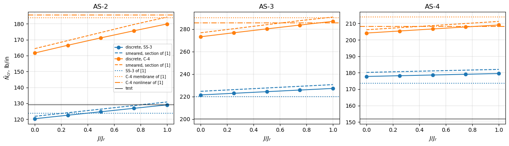
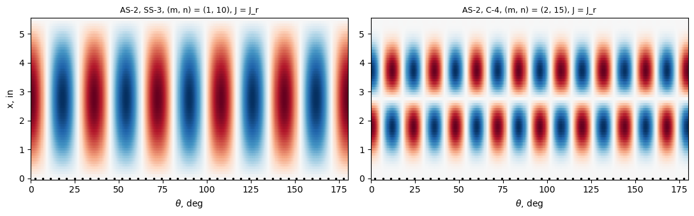

Flat integral stringers, simply supported and clamped: the Caltech shells AS-2 to AS-4 (Singer, Arbocz and Babcock 1971)#
Singer, Arbocz and Babcock [1] tested in axial compression, besides ring-stiffened shells, three aluminium shells with 80 integral stringers machined on the outside, AS-2, AS-3 and AS-4. Their stringers are flat (3.5 to 6 times wider than tall), and the paper gives for them the buckling loads of a linear smeared-stiffener theory for two end conditions: simple support SS-3 (\(w = v = N_x = M_x = 0\)) and clamping C-4 (\(w = v = u = w_{,x} = 0\)), the latter with a membrane pre-buckling state and with the nonlinear pre-buckling deformation caused by the end rings (Table 2, p. 71). The authors judged the end rings of their test rig rigid enough to consider the shells clamped (p. 72): clamping raises the load of these shells by 23 to 48 %.
This notebook builds the shells as MultiDomain assemblies with one plate strip (“blade”) per stringer and compares with every published value. The torsion constant \(J\) of the stringers is not printed in [1]; it enters the smeared theory through the twisting term \(G J w_{,xy}^2/d\) and the discrete model through the twisting stiffness of the blades, and it has a large effect on the clamped shells, whose buckles are short. Instead of choosing a value, the notebook runs a
sensitivity study over \(J\), from \(J = 0\) to the Saint-Venant constant \(J_r\) of the rectangle that reproduces the stringer area, moment of inertia and eccentricity of Table 1.
[1] J. Singer, J. Arbocz and C. D. Babcock Jr., Buckling of imperfect stiffened cylindrical shells under axial compression, AIAA J. 9(1), 68-75, 1971, doi:10.2514/3.6125.
[2] D. L. Block, M. F. Card and M. M. Mikulas, Jr., Buckling of eccentrically stiffened orthotropic cylinders, NASA TN D-2960, 1965, https://ntrs.nasa.gov/citations/19650021133.
[3] M. F. Card and R. M. Jones, Experimental and theoretical results for buckling of eccentrically stiffened cylinders, NASA TN D-3639, 1966, https://ntrs.nasa.gov/citations/19660027866.
[4] J. Singer, M. Baruch and O. Harari, On the stability of eccentrically stiffened cylindrical shells under axial compression, Int. J. Solids Struct. 3(4), 445-470, 1967, doi:10.1016/0020-7683(67)90001-7 (the smeared theory of the SS-3 loads of [1]).
[1]:
%matplotlib inline
import time
import numpy as np
import matplotlib.pyplot as plt
from IPython.display import Markdown, display
import blade_cylinder_utils as bu
import stringer_cylinder_utils as su
def pct(value, ref):
return 100*(value/ref - 1)
def table(header, rows):
out = ['| ' + ' | '.join(header) + ' |', '|' + '---|'*len(header)]
out += ['| ' + ' | '.join(str(c) for c in row) + ' |' for row in rows]
display(Markdown('\n'.join(out)))
def plot_mode(ax, md_, c, skin, R, title, ns, frac=1.):
x, th, w = bu.skin_w(md_, c, skin, R)
sel = th <= frac*th.max() + 1e-12
ax.pcolormesh(np.degrees(th[sel]), x, (w[sel]/np.abs(w).max()).T, cmap='RdBu_r',
shading='auto', vmin=-1, vmax=1)
pos = (np.arange(ns) + 0.5)*2*np.pi/ns
pos = pos[pos <= th[sel].max()]
ax.plot(np.degrees(pos), np.zeros_like(pos), 'k.', ms=3)
ax.set_title(title, fontsize=9)
ax.set_xlabel(r'$\theta$, deg')
Shells, geometry and material#
Table 1 of [1] (p. 71), all dimensions in inches: skin thickness \(t\), \(R/t\), \(L/R\), the stringer area \(A/(dt)\), eccentricity \(-e/t\) (positive here: the stringers are outside, Fig. 2), moment of inertia about the stringer centroid \(I/(dt^3)\), spacing \(d\), length \(L\) and number of stringers; \(E = 10 \times 10^6\) psi, \(\nu = 0.3\) (footnote). The skin thickness is the one obtained by weighing, an average, since the cutter leaves a skin surface of straight lines between the stringers; “the stiffeners are not rectangular in all cases and the measured shape is used in the calculation of stiffener properties” (p. 71).
Table 2 of [1] (p. 71), lb/in: SS-3, the classical linear (smeared) theory [4]; C-4 with the membrane pre-buckling state; C-4 with the nonlinear pre-buckling deformation caused by the end rings; the test; and the ratio of test to the nonlinear C-4 value. The paper does not say which program gave the C-4 values (it names the BOSOR program among the available tools, p. 69). The linear analysis gives one axial half-wave and 9 or 10 circumferential waves for SS-3, and the clamped analysis 10 or more circumferential waves and a few axial half-waves (p. 72).
Units and the inputs used. in, lb, psi; \(\bar{N} = P/(2\pi R)\) in lb/in. \(R = (R/t)\, t\) (4.000 to 4.002 in) and \(L = 5.50\) in as printed (\((L/R) R = 5.52\) in). The printed spacing \(d = 0.316\) in is 0.5 % above \(2\pi R/80 = 0.3143\) in; the smeared theory needs only the stiffnesses per unit circumference \(A/d\), \(I/d\), which follow from Table 1 independently of \(d\), and the discrete model takes 80 stringers with the area \(A = (A/dt)\, t\, 2\pi R/80\), so that both carry the same stiffness per unit circumference.
Stringer section. [1] gives no stringer height: Table 1 gives the area \(A\), the eccentricity \(e\) of the stringer centroid from the middle surface of the skin and \(I\), and Fig. 2(b) (p. 70) draws the stringers on the outer surface of the skin. A rectangle \(t_s \times h_s\) (width \(\times\) height) standing on the skin surface has \(I = t_s h_s^3/12\): \(h_s = \sqrt{12 I/A}\) and \(t_s = A/h_s\) reproduce \(e = (t + h_s)/2\) of Table 1 within 0.7 %, and the stringers come out 0.066 in wide and 0.011 to 0.019 in tall. Their Saint-Venant torsion constant (rectangle, \(J_r = c^3 a\,[1/3 - 64 c/(\pi^5 a) \tanh(\pi a/(2c))]\), \(a \ge c\) the sides) is the upper reference of the sensitivity study.
[2]:
E, NU = 10e6, 0.3 # psi, Table 1 of [1]
G = E/(2*(1 + NU))
NS = 80
L = 5.50 # in
# Table 1 of [1], p. 71: t (in), R/t, L/R, A/(dt), -e/t, I/(dt^3)
TABLE1 = {'AS-2': (7.74e-3, 517, 1.38, 0.506, 1.72, 0.2466),
'AS-3': (11.05e-3, 362, 1.38, 0.330, 1.29, 0.0679),
'AS-4': (10.21e-3, 392, 1.38, 0.235, 1.07, 0.0248)}
# Table 2 of [1], p. 71 (lb/in): SS-3, C-4 membrane, C-4 nonlinear, test, ratio
TABLE2 = {'AS-2': (123.8, 183.8, 185.6, 129.2, 0.697),
'AS-3': (219.8, 290.2, 285.7, 200.3, 0.703),
'AS-4': (173.5, 213.9, 208.1, 152.0, 0.731)}
PUB = ['SS-3', 'C-4 membrane', 'C-4 nonlinear', 'test']
def rect_J(a, c):
# Saint-Venant torsion constant of a rectangle a x c
a, c = max(a, c), min(a, c)
return c**3*a*(1/3 - 64/np.pi**5*c/a*np.tanh(np.pi*a/(2*c)))
shells = {}
rows = []
for s, (t, Rt, LR, Ab, e, Ib) in TABLE1.items():
R = Rt*t
d = 2*np.pi*R/NS
A, I, z = Ab*d*t, Ib*d*t**3, e*t
hs = np.sqrt(12*I/A)
ts = A/hs
Hs = hs
sh = dict(t=t, R=R, d=d, A=A, I=I, z=z, hs=hs, ts=ts, Hs=Hs, Jr=rect_J(ts, hs), Jp=Hs*ts**3/3)
shells[s] = sh
rows.append([s, '%.5f' % t, '%.4f' % R, '%.3f' % (LR*R), '%.4f' % d, '%.5f' % ts, '%.5f' % hs,
'%.2f' % (ts/hs), '%.5f (%.5f, %+.1f %%)' % ((t + hs)/2, z, pct((t + hs)/2, z)),
'%.3e' % sh['Jr'], '%.3e' % sh['Jp'], '%.4f' % (sh['Jr']/sh['Jp'])])
table(['shell', 't, in', 'R, in', '(L/R) R, in', '2 pi R/80, in', 't_s, in', 'h_s, in', 't_s/h_s',
'(t + h_s)/2 (e of [1]), in', 'J_r, in^4', 'J of the strip, in^4', 'J_r/J_strip'], rows)
rows = [[s] + list(v) + ['%.3f' % (v[3]/v[2])] for s, v in TABLE2.items()]
table(['shell', 'SS-3', 'C-4 membrane', 'C-4 nonlinear', 'test', 'ratio of [1]', 'test/C-4 nonlinear'], rows)
shell |
t, in |
R, in |
(L/R) R, in |
2 pi R/80, in |
t_s, in |
h_s, in |
t_s/h_s |
(t + h_s)/2 (e of [1]), in |
J_r, in^4 |
J of the strip, in^4 |
J_r/J_strip |
|---|---|---|---|---|---|---|---|---|---|---|---|
AS-2 |
0.00774 |
4.0016 |
5.522 |
0.3143 |
0.06576 |
0.01872 |
3.51 |
0.01323 (0.01331, -0.6 %) |
1.181e-07 |
1.774e-06 |
0.0666 |
AS-3 |
0.01105 |
4.0001 |
5.520 |
0.3142 |
0.06598 |
0.01736 |
3.80 |
0.01421 (0.01425, -0.3 %) |
9.612e-08 |
1.662e-06 |
0.0578 |
AS-4 |
0.01021 |
4.0023 |
5.523 |
0.3143 |
0.06564 |
0.01149 |
5.71 |
0.01085 (0.01092, -0.7 %) |
2.954e-08 |
1.083e-06 |
0.0273 |
shell |
SS-3 |
C-4 membrane |
C-4 nonlinear |
test |
ratio of [1] |
test/C-4 nonlinear |
|---|---|---|---|---|---|---|
AS-2 |
123.8 |
183.8 |
185.6 |
129.2 |
0.697 |
0.696 |
AS-3 |
219.8 |
290.2 |
285.7 |
200.3 |
0.703 |
0.701 |
AS-4 |
173.5 |
213.9 |
208.1 |
152.0 |
0.731 |
0.730 |
Smeared-stiffener theory and the torsion constant#
SS-3: equation (15) of [2] (su.smeared_ss, minimum over \(m \le 12\), \(n \le 60\); membrane pre-buckling state; Donnell kinematics; the stringers as beams on the skin surface with the twisting energy \(G J w_{,xy}^2/d\)). C-4: the same energy with the clamped functions of equation (A5) of Card and Jones [3] (su.smeared_cc, Rayleigh-Ritz, 12 terms in each of \(u\), \(v\), \(w\); minimum over \(n \le 40\); 16 and 20 terms change the load by less than
0.03 %). Both with the section of Table 1 (\(A\), \(e\), \(I_o = I + A e^2\)) and \(J = f J_r\), \(f = 0 \ldots 1\).
The last table gives, for each published value, the factor \(f\) for which the smeared theory reproduces it (bisection over \(0 \le f \le 3\)).
[3]:
FJ = [0., 0.25, 0.5, 0.75, 1.]
def sm(s, J, section='W', ends='SS'):
sh = shells[s]
if section == 'W':
sec = (sh['A'], sh['z'], sh['I'] + sh['A']*sh['z']**2)
else: # the plate strip of the discrete model, on the skin surface
zp = (sh['t'] + sh['Hs'])/2
sec = (sh['ts']*sh['Hs'], zp, sh['ts']*sh['Hs']**3/12 + sh['ts']*sh['Hs']*zp**2)
f = su.smeared_ss if ends == 'SS' else su.smeared_cc
return f(sh['R'], L, sh['t'], E, NU, sh['d'], *sec, J)
SM = {(s, ends, f): sm(s, f*shells[s]['Jr'], ends=ends) for s in shells for ends in ('SS', 'CC') for f in FJ}
rows = []
for s in shells:
P = TABLE2[s]
for f in FJ:
Nss, mn = SM[(s, 'SS', f)]
Ncc, n = SM[(s, 'CC', f)]
rows.append([s, f, '%.1f %s' % (Nss, mn), '%+.1f %%' % pct(Nss, P[0]), '%.1f (n = %d)' % (Ncc, n),
'%+.1f %%' % pct(Ncc, P[1]), '%+.1f %%' % pct(Ncc, P[2])])
table(['shell', 'J/J_r', 'Eq. (15), SS-3 (m, n)', 'vs SS-3 of [1]', 'Ritz (A5), C-4', 'vs C-4 membrane of [1]',
'vs C-4 nonlinear of [1]'], rows)
def fit(func, target, lo=0., hi=3.):
if (func(lo) - target)*(func(hi) - target) > 0:
return None
for _ in range(40):
mid = (lo + hi)/2
if (func(lo) - target)*(func(mid) - target) <= 0:
hi = mid
else:
lo = mid
return (lo + hi)/2
rows = []
for s in shells:
Jr = shells[s]['Jr']
P = TABLE2[s]
fss = fit(lambda f: sm(s, f*Jr, ends='SS')[0], P[0])
fcc = fit(lambda f: sm(s, f*Jr, ends='CC')[0], P[1])
fnl = fit(lambda f: sm(s, f*Jr, ends='CC')[0], P[2])
rows.append([s] + ['-' if f is None else '%.2f' % f for f in (fss, fcc, fnl)])
table(['shell', 'J/J_r for SS-3 of [1]', 'J/J_r for C-4 membrane of [1]', 'J/J_r for C-4 nonlinear of [1]'], rows)
shell |
J/J_r |
Eq. (15), SS-3 (m, n) |
vs SS-3 of [1] |
Ritz (A5), C-4 |
vs C-4 membrane of [1] |
vs C-4 nonlinear of [1] |
|---|---|---|---|---|---|---|
AS-2 |
0.0 |
121.8 (1, 10) |
-1.6 % |
164.4 (n = 15) |
-10.6 % |
-11.4 % |
AS-2 |
0.25 |
124.1 (1, 10) |
+0.2 % |
169.5 (n = 15) |
-7.8 % |
-8.7 % |
AS-2 |
0.5 |
126.3 (1, 10) |
+2.0 % |
174.5 (n = 15) |
-5.0 % |
-6.0 % |
AS-2 |
0.75 |
128.6 (1, 10) |
+3.9 % |
179.6 (n = 15) |
-2.3 % |
-3.2 % |
AS-2 |
1.0 |
130.8 (1, 10) |
+5.7 % |
184.3 (n = 14) |
+0.3 % |
-0.7 % |
AS-3 |
0.0 |
224.7 (1, 9) |
+2.2 % |
276.7 (n = 14) |
-4.6 % |
-3.1 % |
AS-3 |
0.25 |
226.2 (1, 9) |
+2.9 % |
280.3 (n = 14) |
-3.4 % |
-1.9 % |
AS-3 |
0.5 |
227.6 (1, 9) |
+3.6 % |
283.9 (n = 14) |
-2.2 % |
-0.6 % |
AS-3 |
0.75 |
229.1 (1, 9) |
+4.2 % |
287.5 (n = 14) |
-0.9 % |
+0.6 % |
AS-3 |
1.0 |
230.6 (1, 9) |
+4.9 % |
290.7 (n = 13) |
+0.2 % |
+1.8 % |
AS-4 |
0.0 |
180.2 (1, 9) |
+3.9 % |
206.2 (n = 15) |
-3.6 % |
-0.9 % |
AS-4 |
0.25 |
180.7 (1, 9) |
+4.1 % |
207.4 (n = 15) |
-3.0 % |
-0.3 % |
AS-4 |
0.5 |
181.1 (1, 9) |
+4.4 % |
208.7 (n = 15) |
-2.4 % |
+0.3 % |
AS-4 |
0.75 |
181.6 (1, 9) |
+4.7 % |
210.0 (n = 15) |
-1.8 % |
+0.9 % |
AS-4 |
1.0 |
182.0 (1, 9) |
+4.9 % |
211.2 (n = 15) |
-1.2 % |
+1.5 % |
shell |
J/J_r for SS-3 of [1] |
J/J_r for C-4 membrane of [1] |
J/J_r for C-4 nonlinear of [1] |
|---|---|---|---|
AS-2 |
0.22 |
0.97 |
1.08 |
AS-3 |
0.96 |
0.62 |
|
AS-4 |
1.52 |
0.38 |
The theory of the SS-3 column: Singer, Baruch and Harari (1967)#
[1] names [4] for the smeared analysis of its stiffened shells (p. 69), and its SS-3 column is the classical linear analysis (p. 71). The simply supported analysis of [4] (pp. 447-449, notation of p. 446):
assumptions (a) to (d), p. 448: the stiffeners distributed over the whole surface; the normal strains linear through stiffener and sheet, equal at their contact; the shear flow \(N_{x\phi}\) carried by the sheet alone; the torsional rigidity of the stiffener added to that of the sheet;
the resultants about the middle surface of the skin, equations (1) and (2), with the stringer parameters \(\mu_1 = (1 - \nu^2) A/(d t)\), \(\chi_1 = (1 - \nu^2) A e_1/(d t R)\), \(\zeta_1 = E A e_1 R/(d D)\), \(\eta_{01} = E I_{01}/(d D)\), \(\eta_{t1} = G J/(d D)\), \(D = E t^3/[12(1 - \nu^2)]\); the eccentricity \(e_1\) is positive inside (Fig. 1), so \(e_1 = -\bar{z}\) for these outside stringers, and \(I_{01} = I + A \bar{z}^2\) is the moment of inertia about the middle surface of the skin; no rings (\(\mu_2 = \chi_2 = \zeta_2 = \eta_{02} = \eta_{t2} = 0\));
the classical simple support, equation (3): \(w = M_x = N_x = v = 0\), the SS-3 of [1] (footnote of Table 2);
the membrane pre-buckling state, equation (5): \(N_{x0} = -P/(2 \pi R)\);
the Donnell-type stability equations (13), solved exactly by the displacements (4), \(u = A_n \sin t\phi \cos n\beta x\), \(v = B_n \cos t\phi \sin n\beta x\), \(w = C_n \sin t\phi \sin n\beta x\), with \(\beta = \pi R/L\), \(x\) and the displacements divided by \(R\), \(n\) axial half-waves and \(t\) circumferential waves;
the first two equations (13) give \(A_n = a_n C_n\) and \(B_n = b_n C_n\), \(a_n = D_{1n}/D_{0n}\), \(b_n = D_{2n}/D_{0n}\), equations (15) and (16) with \(q = n\) (p. 451: at \(q = n\) they are those of the simply supported shell); the third gives equation (6) for \(\lambda = P R/(\pi D)\), equation (7), and \(\bar{N} = P/(2 \pi R) = \lambda D/(2 R^2)\), minimum over the integers \(n \le 12\), \(t \le 60\) (p. 449).
Equation (16) is read with the factor \((1 - \nu)/2\) printed before the brace of \(D_{0q}\) on its first term only, \(D_{0q} = \frac{1 - \nu}{2}(1 + \mu_2) t^4 + [(1 + \mu_1)(1 + \mu_2) - \nu] q^2 \beta^2 t^2 + (1 + \mu_1) \frac{1 - \nu}{2} q^4 \beta^4\), the determinant of the first two equations (13); the cell prints the largest residual of these two equations with \(a_n\), \(b_n\) from equations (15) and (16).
The first table compares equation (6) of [4] with equation (15) of [2] for the section of Table 1 and the same \(J\), and both with the SS-3 column of [1]. The second gives the change of equation (6) (\(J = 0\)) when each input of Table 1 changes by half a unit of its last printed digit, and with the length \((L/R) R\) instead of the printed \(L\).
[4]:
def singer1967_ss(sh, J, Lx=L, nmax=12, tmax=60):
# equation (6) of [4], stringers only; returns N (lb/in), (n, t), residual
t, R, d, A = sh['t'], sh['R'], sh['d'], sh['A']
e1, I01 = -sh['z'], sh['I'] + sh['A']*sh['z']**2
D = E*t**3/(12*(1 - NU**2))
G = E/(2*(1 + NU))
mu1 = (1 - NU**2)*A/(d*t)
chi1 = (1 - NU**2)*A*e1/(d*t*R)
zeta1 = E*A*e1*R/(d*D)
eta01 = E*I01/(d*D)
etat1 = G*J/(d*D)
beta = np.pi*R/Lx
n = np.arange(1, nmax + 1)[:, None]
tw = np.arange(1, tmax + 1)[None, :]
q = n*beta
c = (1 - NU)/2
# equations (15) and (16), q = n, mu2 = chi2 = 0
D0 = c*tw**4 + ((1 + mu1) - NU)*q**2*tw**2 + (1 + mu1)*c*q**4
D1 = (chi1*q**3 + c*q)*tw**2 + chi1*c*q**5 - NU*c*q**3
D2 = -c*tw**3 + ((1 + NU)/2*NU - (1 + mu1))*q**2*tw - (1 + NU)/2*chi1*q**4*tw
a, b = D1/D0, D2/D0
# residual of the first two equations (13) with the displacements (4), C_n = 1
r1 = (-(1 + mu1)*q**2 - c*tw**2)*a - (1 + NU)/2*q*tw*b + chi1*q**3 - NU*q
r2 = -(1 + NU)/2*q*tw*a - (tw**2 + c*q**2)*b - tw
res = max(np.abs(r1).max()/np.abs(q**3).max(), np.abs(r2).max()/tw.max()**3)
# equation (6)
lam = 2/q**2*(zeta1*(-q**3*a) + (1 + eta01)*q**4 + (2 + etat1)*q**2*tw**2 + tw**4
+ 12*(R/t)**2*((1 + b*tw) + NU*q*a))
N = lam*D/(2*R**2)
i, j = np.unravel_index(np.argmin(N), N.shape)
return N[i, j], (int(n[i, 0]), int(tw[0, j])), res
SG = {(s, f): singer1967_ss(shells[s], f*shells[s]['Jr']) for s in shells for f in FJ}
print('largest relative residual of the first two equations (13): %.1e' % max(v[2] for v in SG.values()))
rows = []
for s in shells:
P = TABLE2[s]
for f in FJ:
Ns, nt, _ = SG[(s, f)]
Nb, mn = SM[(s, 'SS', f)]
rows.append([s, f, '%.2f %s' % (Ns, nt), '%.2f %s' % (Nb, mn), '%+.3f %%' % pct(Ns, Nb), P[0],
'%+.1f %%' % pct(Ns, P[0])])
table(['shell', 'J/J_r', 'Eq. (6) of [4], lb/in (n, t)', 'Eq. (15) of [2], lb/in (m, n)', '(6) vs (15)',
'SS-3 of [1]', '(6) vs SS-3 of [1]'], rows)
def shell_from(t, Rt, LR, Ab, e, Ib):
# the inputs of the smeared theory from a row of Table 1, as in the cell of the geometry
R = Rt*t
d = 2*np.pi*R/NS
return dict(t=t, R=R, d=d, A=Ab*d*t, I=Ib*d*t**3, z=e*t)
STEPS = [('t', 0, 0.005e-3), ('R/t', 1, 0.5), ('A/(dt)', 3, 0.0005), ('-e/t', 4, 0.005), ('I/(dt^3)', 5, 0.00005)]
rows = []
for s in shells:
N0 = SG[(s, 0.)][0]
row = [s, '%.2f' % N0]
for name, k, h in STEPS:
ch = []
for sgn in (-1, 1):
v = list(TABLE1[s])
v[k] += sgn*h
ch.append(pct(singer1967_ss(shell_from(*v), 0.)[0], N0))
row.append('%+.2f, %+.2f %%' % tuple(ch))
LR, R = TABLE1[s][2], shells[s]['R']
row.append('%.3f in: %+.2f %%' % (LR*R, pct(singer1967_ss(shells[s], 0., Lx=LR*R)[0], N0)))
rows.append(row)
table(['shell', 'Eq. (6), J = 0, lb/in'] + ['%s -/+ %g' % (name, h) for name, k, h in STEPS] + ['L = (L/R) R'],
rows)
largest relative residual of the first two equations (13): 7.7e-19
shell |
J/J_r |
Eq. (6) of [4], lb/in (n, t) |
Eq. (15) of [2], lb/in (m, n) |
|
SS-3 of [1] |
|
|---|---|---|---|---|---|---|
AS-2 |
0.0 |
121.82 (1, 10) |
121.82 (1, 10) |
+0.000 % |
123.8 |
-1.6 % |
AS-2 |
0.25 |
124.07 (1, 10) |
124.07 (1, 10) |
+0.000 % |
123.8 |
+0.2 % |
AS-2 |
0.5 |
126.33 (1, 10) |
126.33 (1, 10) |
+0.000 % |
123.8 |
+2.0 % |
AS-2 |
0.75 |
128.59 (1, 10) |
128.59 (1, 10) |
+0.000 % |
123.8 |
+3.9 % |
AS-2 |
1.0 |
130.84 (1, 10) |
130.84 (1, 10) |
+0.000 % |
123.8 |
+5.7 % |
AS-3 |
0.0 |
224.67 (1, 9) |
224.67 (1, 9) |
+0.000 % |
219.8 |
+2.2 % |
AS-3 |
0.25 |
226.16 (1, 9) |
226.16 (1, 9) |
+0.000 % |
219.8 |
+2.9 % |
AS-3 |
0.5 |
227.65 (1, 9) |
227.65 (1, 9) |
+0.000 % |
219.8 |
+3.6 % |
AS-3 |
0.75 |
229.14 (1, 9) |
229.14 (1, 9) |
+0.000 % |
219.8 |
+4.2 % |
AS-3 |
1.0 |
230.63 (1, 9) |
230.63 (1, 9) |
+0.000 % |
219.8 |
+4.9 % |
AS-4 |
0.0 |
180.20 (1, 9) |
180.20 (1, 9) |
+0.000 % |
173.5 |
+3.9 % |
AS-4 |
0.25 |
180.66 (1, 9) |
180.66 (1, 9) |
+0.000 % |
173.5 |
+4.1 % |
AS-4 |
0.5 |
181.12 (1, 9) |
181.12 (1, 9) |
+0.000 % |
173.5 |
+4.4 % |
AS-4 |
0.75 |
181.57 (1, 9) |
181.57 (1, 9) |
+0.000 % |
173.5 |
+4.7 % |
AS-4 |
1.0 |
182.03 (1, 9) |
182.03 (1, 9) |
+0.000 % |
173.5 |
+4.9 % |
shell |
Eq. (6), J = 0, lb/in |
t -/+ 5e-06 |
R/t -/+ 0.5 |
A/(dt) -/+ 0.0005 |
-e/t -/+ 0.005 |
I/(dt^3) -/+ 5e-05 |
L = (L/R) R |
|---|---|---|---|---|---|---|---|
AS-2 |
121.82 |
-0.07, +0.07 % |
+0.09, -0.09 % |
-0.02, +0.02 % |
-0.04, +0.04 % |
-0.00, +0.00 % |
5.522 in: -0.03 % |
AS-3 |
224.67 |
-0.04, +0.05 % |
+0.15, -0.15 % |
-0.02, +0.02 % |
-0.03, +0.03 % |
-0.00, +0.00 % |
5.520 in: +0.00 % |
AS-4 |
180.20 |
-0.05, +0.05 % |
+0.12, -0.12 % |
-0.02, +0.02 % |
-0.02, +0.02 % |
-0.00, +0.00 % |
5.523 in: -0.01 % |
Model with discrete stringers#
su.buckling_membrane: the assembly of bu.build_cylinder, curved skin panels cylshell_clpt_sanders between the stringers and one plate_clpt_gl blade per stringer ('SSycte' and 'BFycte' connections), the half cylinder between two symmetry planes through the middle of a bay (80 stringers), with the membrane pre-buckling state of a uniform axial strain in skin and blades. SS-3: \(v = w = 0\) on skin and blades, \(u\) free, one point with \(u = 0\). C-4:
\(u = v = w = w_{,x} = 0\) on the skin and the blade ends clamped. The critical load is the lowest positive one of ten eigenvalues, its \((m, n)\) from the normal displacement of the skin (bu.classify).
The blade is a plate strip from the outer surface of the skin to the stringer tip ('BFycte' with face='upper'), of thickness \(t_s\) and height \(H_s = h_s\): it is the rectangle of the stringer section, with its area, its lateral and radial bending stiffnesses and its eccentricity \((t + h_s)/2\), but its Kirchhoff twisting stiffness \(4 D_{66} H_s = G H_s t_s^3/3\) treats the wide stringer as a thin wall: 15 to 37 times \(G J_r\). \(D_{66}\) of the blades is
therefore scaled (D_factor) so that \(4 D_{66}
H_s = G J\) with \(J = f J_r\); \(f = 0\) removes the twisting stiffness. The axial load of the blades also works on their sideways (circumferential) displacement (the “lateral term” of plate_clpt_gl), which the smeared theory neglects; it is kept, as physical. The gap below is the discrete model against the smeared theory for the same plate strip and the same \(J\).
Convergence#
Terms \(m_x\) along \(x\) (skin and blades), \(n_y\) across a skin bay and \(n_b\) across a blade, \(J = J_r\).
[5]:
LEVELS = [(12, 6, 4), (16, 8, 4), (20, 10, 5)]
def run(s, bc, f, lev):
sh = shells[s]
return su.buckling_membrane(sh['R'], sh['t'], L, E, NU, sh['ts'], sh['Hs'], 'external', bc, NS, *lev,
D66_factor=f*sh['Jr']/sh['Jp'])
t0 = time.time()
rows = []
for s in shells:
for bc in ('SS', 'CC'):
prev = None
for lev in LEVELS:
N, modes, N1, md_, skin, ndof, dt = run(s, bc, 1., lev)
rows.append([s, bc, lev, ndof, '%.1f' % dt, '%.2f' % N, '(%d, %d)' % modes[0][1:3],
'' if prev is None else '%+.3f %%' % pct(N, prev)])
prev = N
table(['shell', 'ends', 'm_x, n_y, n_b', 'dofs', 'time, s', 'N, lb/in', '(m, n)', 'change'], rows)
print('%.0f s' % (time.time() - t0))
shell |
ends |
m_x, n_y, n_b |
dofs |
time, s |
N, lb/in |
(m, n) |
change |
|---|---|---|---|---|---|---|---|
AS-2 |
SS |
(12, 6, 4) |
10951 |
5.5 |
129.02 |
(1, 10) |
|
AS-2 |
SS |
(16, 8, 4) |
18239 |
13.0 |
129.02 |
(1, 10) |
-0.001 % |
AS-2 |
SS |
(20, 10, 5) |
29919 |
22.8 |
129.02 |
(1, 10) |
-0.001 % |
AS-2 |
CC |
(12, 6, 4) |
11592 |
4.8 |
180.00 |
(2, 15) |
|
AS-2 |
CC |
(16, 8, 4) |
18880 |
14.9 |
179.94 |
(2, 15) |
-0.030 % |
AS-2 |
CC |
(20, 10, 5) |
30560 |
34.9 |
179.92 |
(2, 15) |
-0.010 % |
AS-3 |
SS |
(12, 6, 4) |
10951 |
5.8 |
227.24 |
(1, 9) |
|
AS-3 |
SS |
(16, 8, 4) |
18239 |
11.1 |
227.24 |
(1, 9) |
-0.000 % |
AS-3 |
SS |
(20, 10, 5) |
29919 |
22.6 |
227.24 |
(1, 9) |
-0.000 % |
AS-3 |
CC |
(12, 6, 4) |
11592 |
4.2 |
287.23 |
(3, 14) |
|
AS-3 |
CC |
(16, 8, 4) |
18880 |
13.3 |
287.01 |
(3, 14) |
-0.075 % |
AS-3 |
CC |
(20, 10, 5) |
30560 |
31.9 |
286.94 |
(3, 14) |
-0.024 % |
AS-4 |
SS |
(12, 6, 4) |
10951 |
6.0 |
179.51 |
(1, 9) |
|
AS-4 |
SS |
(16, 8, 4) |
18239 |
12.5 |
179.51 |
(1, 9) |
-0.000 % |
AS-4 |
SS |
(20, 10, 5) |
29919 |
28.2 |
179.51 |
(1, 9) |
-0.000 % |
AS-4 |
CC |
(12, 6, 4) |
11592 |
4.5 |
209.12 |
(3, 15) |
|
AS-4 |
CC |
(16, 8, 4) |
18880 |
16.8 |
209.09 |
(3, 15) |
-0.012 % |
AS-4 |
CC |
(20, 10, 5) |
30560 |
34.5 |
209.09 |
(3, 15) |
-0.003 % |
287 s
Sensitivity to the torsion constant#
The finest level, \(J = f J_r\) with \(f = 0, 0.25, 0.5, 0.75, 1\), both end conditions; each discrete load against the smeared theory for the same strip and \(J\) (gap) and against the values of [1].
[6]:
t0 = time.time()
RES = {(s, bc, f): run(s, bc, f, LEVELS[-1]) for s in shells for bc in ('SS', 'CC') for f in FJ}
print('%.0f s' % (time.time() - t0))
rows = []
for s in shells:
P = TABLE2[s]
for bc in ('SS', 'CC'):
for f in FJ:
N, modes = RES[(s, bc, f)][:2]
ref = sm(s, f*shells[s]['Jr'], section='P', ends=bc)[0]
row = [s, 'SS-3' if bc == 'SS' else 'C-4', f, '%.1f (%d, %d)' % (N, *modes[0][1:3]), '%.1f' % ref,
'**%+.1f %%**' % pct(N, ref)]
if bc == 'SS':
row += ['%+.1f %%' % pct(N, P[0]), '-', '-']
else:
row += ['-', '%+.1f %%' % pct(N, P[1]), '%+.1f %%' % pct(N, P[2])]
row += ['%+.1f %%' % pct(N, P[3])]
rows.append(row)
table(['shell', 'ends', 'J/J_r', 'discrete N, lb/in (m, n)', 'smeared, same strip', 'gap', 'vs SS-3 of [1]',
'vs C-4 membrane', 'vs C-4 nonlinear', 'vs test'], rows)
# the factor f for which the discrete model gives each published value (linear interpolation)
rows = []
for s in shells:
P = TABLE2[s]
out = [s]
for bc, target in (('SS', P[0]), ('CC', P[1]), ('CC', P[2])):
Ns = np.array([RES[(s, bc, f)][0] for f in FJ])
out.append('%.2f' % np.interp(target, Ns, FJ) if Ns[0] <= target <= Ns[-1] else
('< 0' if target < Ns[0] else '> 1'))
rows.append(out)
table(['shell', 'J/J_r for SS-3 of [1]', 'J/J_r for C-4 membrane of [1]', 'J/J_r for C-4 nonlinear of [1]'], rows)
fig, axes = plt.subplots(1, 3, figsize=(13, 3.8))
for ax, s in zip(axes, shells):
P = TABLE2[s]
for bc, c in (('SS', 'C0'), ('CC', 'C1')):
ax.plot(FJ, [RES[(s, bc, f)][0] for f in FJ], c + 'o-', label='discrete, %s' % ('SS-3' if bc == 'SS' else 'C-4'))
ax.plot(FJ, [sm(s, f*shells[s]['Jr'], ends=bc)[0] for f in FJ], c + '--',
label='smeared, section of [1]')
ax.axhline(P[0], color='C0', ls=':', label='SS-3 of [1]')
ax.axhline(P[1], color='C1', ls=':', label='C-4 membrane of [1]')
ax.axhline(P[2], color='C1', ls='-.', label='C-4 nonlinear of [1]')
ax.axhline(P[3], color='k', ls='-', lw=0.8, label='test')
ax.set_xlabel('$J/J_r$')
ax.set_title(s)
ax.grid(True, lw=0.3)
axes[0].set_ylabel(r'$\bar{N}_{cr}$, lb/in')
axes[0].legend(fontsize=7)
plt.tight_layout()
plt.show()
870 s
shell |
ends |
J/J_r |
discrete N, lb/in (m, n) |
smeared, same strip |
gap |
vs SS-3 of [1] |
vs C-4 membrane |
vs C-4 nonlinear |
vs test |
|---|---|---|---|---|---|---|---|---|---|
AS-2 |
SS-3 |
0.0 |
120.3 (1, 10) |
121.7 |
-1.2 % |
-2.8 % |
-6.9 % |
||
AS-2 |
SS-3 |
0.25 |
122.5 (1, 10) |
124.0 |
-1.2 % |
-1.1 % |
-5.2 % |
||
AS-2 |
SS-3 |
0.5 |
124.7 (1, 10) |
126.2 |
-1.2 % |
+0.7 % |
-3.5 % |
||
AS-2 |
SS-3 |
0.75 |
126.9 (1, 10) |
128.5 |
-1.3 % |
+2.5 % |
-1.8 % |
||
AS-2 |
SS-3 |
1.0 |
129.0 (1, 10) |
130.7 |
-1.3 % |
+4.2 % |
-0.1 % |
||
AS-2 |
C-4 |
0.0 |
161.6 (2, 15) |
164.0 |
-1.4 % |
-12.1 % |
-12.9 % |
+25.1 % |
|
AS-2 |
C-4 |
0.25 |
166.5 (2, 15) |
169.1 |
-1.5 % |
-9.4 % |
-10.3 % |
+28.9 % |
|
AS-2 |
C-4 |
0.5 |
171.2 (2, 15) |
174.2 |
-1.7 % |
-6.9 % |
-7.8 % |
+32.5 % |
|
AS-2 |
C-4 |
0.75 |
175.6 (2, 15) |
179.2 |
-2.0 % |
-4.4 % |
-5.4 % |
+35.9 % |
|
AS-2 |
C-4 |
1.0 |
179.9 (2, 15) |
183.9 |
-2.2 % |
-2.1 % |
-3.1 % |
+39.3 % |
|
AS-3 |
SS-3 |
0.0 |
221.5 (1, 9) |
224.6 |
-1.4 % |
+0.8 % |
+10.6 % |
||
AS-3 |
SS-3 |
0.25 |
222.9 (1, 9) |
226.1 |
-1.4 % |
+1.4 % |
+11.3 % |
||
AS-3 |
SS-3 |
0.5 |
224.4 (1, 9) |
227.6 |
-1.4 % |
+2.1 % |
+12.0 % |
||
AS-3 |
SS-3 |
0.75 |
225.8 (1, 9) |
229.1 |
-1.4 % |
+2.7 % |
+12.7 % |
||
AS-3 |
SS-3 |
1.0 |
227.2 (1, 9) |
230.6 |
-1.4 % |
+3.4 % |
+13.4 % |
||
AS-3 |
C-4 |
0.0 |
273.2 (3, 15) |
276.4 |
-1.2 % |
-5.9 % |
-4.4 % |
+36.4 % |
|
AS-3 |
C-4 |
0.25 |
276.8 (3, 14) |
280.0 |
-1.2 % |
-4.6 % |
-3.1 % |
+38.2 % |
|
AS-3 |
C-4 |
0.5 |
280.2 (3, 14) |
283.6 |
-1.2 % |
-3.4 % |
-1.9 % |
+39.9 % |
|
AS-3 |
C-4 |
0.75 |
283.6 (3, 14) |
287.2 |
-1.3 % |
-2.3 % |
-0.7 % |
+41.6 % |
|
AS-3 |
C-4 |
1.0 |
286.9 (3, 14) |
290.5 |
-1.2 % |
-1.1 % |
+0.4 % |
+43.3 % |
|
AS-4 |
SS-3 |
0.0 |
177.7 (1, 9) |
180.1 |
-1.3 % |
+2.4 % |
+16.9 % |
||
AS-4 |
SS-3 |
0.25 |
178.2 (1, 9) |
180.6 |
-1.3 % |
+2.7 % |
+17.2 % |
||
AS-4 |
SS-3 |
0.5 |
178.6 (1, 9) |
181.1 |
-1.3 % |
+3.0 % |
+17.5 % |
||
AS-4 |
SS-3 |
0.75 |
179.1 (1, 9) |
181.5 |
-1.3 % |
+3.2 % |
+17.8 % |
||
AS-4 |
SS-3 |
1.0 |
179.5 (1, 9) |
182.0 |
-1.4 % |
+3.5 % |
+18.1 % |
||
AS-4 |
C-4 |
0.0 |
204.2 (3, 15) |
205.9 |
-0.8 % |
-4.6 % |
-1.9 % |
+34.3 % |
|
AS-4 |
C-4 |
0.25 |
205.4 (3, 15) |
207.1 |
-0.8 % |
-4.0 % |
-1.3 % |
+35.1 % |
|
AS-4 |
C-4 |
0.5 |
206.6 (3, 15) |
208.4 |
-0.8 % |
-3.4 % |
-0.7 % |
+36.0 % |
|
AS-4 |
C-4 |
0.75 |
207.9 (3, 15) |
209.7 |
-0.9 % |
-2.8 % |
-0.1 % |
+36.8 % |
|
AS-4 |
C-4 |
1.0 |
209.1 (3, 15) |
210.9 |
-0.9 % |
-2.3 % |
+0.5 % |
+37.6 % |
shell |
J/J_r for SS-3 of [1] |
J/J_r for C-4 membrane of [1] |
J/J_r for C-4 nonlinear of [1] |
|---|---|---|---|
AS-2 |
0.40 |
> 1 |
> 1 |
AS-3 |
< 0 |
> 1 |
0.91 |
AS-4 |
< 0 |
> 1 |
0.80 |

Clamped ends with the linear static pre-buckling state#
bu.buckling_clamped: \(x = 0\) clamped, \(x = L\) clamped with a uniform shortening prescribed on skin and blades (the platens of the test rig), the pre-buckling state the linear static solution, which contains the bending of the skin near the ends that the end rings cause (the end rings of [1] hold the radial expansion). It is the linear counterpart of the “nonlinear C-4” column of [1]; level \((16, 8, 4)\).
[7]:
t0 = time.time()
CLAMPED = {}
for s in shells:
sh = shells[s]
for f in (0., 1.):
P, modes = bu.buckling_clamped(sh['R'], sh['t'], L, E, NU, sh['ts'], sh['Hs'], 'external', *LEVELS[1],
nstiff=NS, blade_D66_factor=f*sh['Jr']/sh['Jp'])[:2]
CLAMPED[(s, f)] = (P/(2*np.pi*sh['R']), modes[0][1:3])
print('%.0f s' % (time.time() - t0))
rows = []
for s in shells:
P = TABLE2[s]
for f in (0., 1.):
N, mn = CLAMPED[(s, f)]
rows.append([s, f, '%.1f %s' % (N, mn), '%+.1f %%' % pct(N, RES[(s, 'CC', f)][0]),
'%+.1f %%' % pct(N, P[1]), '%+.1f %%' % pct(N, P[2]), '%+.1f %%' % pct(N, P[3])])
table(['shell', 'J/J_r', 'N, lb/in (m, n)', 'vs membrane C-4 (discrete)', 'vs C-4 membrane of [1]',
'vs C-4 nonlinear of [1]', 'vs test'], rows)
133 s
shell |
J/J_r |
N, lb/in (m, n) |
vs membrane C-4 (discrete) |
vs C-4 membrane of [1] |
vs C-4 nonlinear of [1] |
vs test |
|---|---|---|---|---|---|---|
AS-2 |
0.0 |
162.2 (2, 15) |
+0.4 % |
-11.7 % |
-12.6 % |
+25.6 % |
AS-2 |
1.0 |
180.5 (2, 15) |
+0.3 % |
-1.8 % |
-2.7 % |
+39.7 % |
AS-3 |
0.0 |
274.0 (4, 14) |
+0.3 % |
-5.6 % |
-4.1 % |
+36.8 % |
AS-3 |
1.0 |
287.7 (2, 13) |
+0.3 % |
-0.9 % |
+0.7 % |
+43.6 % |
AS-4 |
0.0 |
204.4 (3, 15) |
+0.1 % |
-4.5 % |
-1.8 % |
+34.4 % |
AS-4 |
1.0 |
209.3 (3, 15) |
+0.1 % |
-2.2 % |
+0.6 % |
+37.7 % |
Every published value against the models (\(J = J_r\))#
[8]:
rows = []
for s in shells:
P = TABLE2[s]
Nss, Ncc, Ncl = RES[(s, 'SS', 1.)][0], RES[(s, 'CC', 1.)][0], CLAMPED[(s, 1.)][0]
rows.append([s, 'SS-3', P[0], '%.1f' % SM[(s, 'SS', 1.)][0], '%+.1f %%' % pct(SM[(s, 'SS', 1.)][0], P[0]),
'%.1f' % Nss, '%+.1f %%' % pct(Nss, P[0])])
rows.append([s, 'C-4 membrane', P[1], '%.1f' % SM[(s, 'CC', 1.)][0], '%+.1f %%' % pct(SM[(s, 'CC', 1.)][0], P[1]),
'%.1f' % Ncc, '%+.1f %%' % pct(Ncc, P[1])])
rows.append([s, 'C-4 nonlinear', P[2], '-', '-', '%.1f (linear static)' % Ncl, '%+.1f %%' % pct(Ncl, P[2])])
rows.append([s, 'test', P[3], '-', '-', '%.1f (C-4, linear static)' % Ncl, '%+.1f %%' % pct(Ncl, P[3])])
table(['shell', 'value of [1]', 'lb/in', 'smeared, section of [1]', 'vs [1]', 'discrete', 'vs [1]'], rows)
fig, axes = plt.subplots(1, 2, figsize=(11, 3.5))
for ax, bc in zip(axes, ('SS', 'CC')):
N, modes, N1, md_, skin = RES[('AS-2', bc, 1.)][:5]
plot_mode(ax, md_, modes[0][3], skin, shells['AS-2']['R'],
'AS-2, %s, (m, n) = (%d, %d), J = J_r' % ('SS-3' if bc == 'SS' else 'C-4', *modes[0][1:3]), NS)
axes[0].set_ylabel('x, in')
plt.tight_layout()
plt.show()
shell |
value of [1] |
lb/in |
smeared, section of [1] |
vs [1] |
discrete |
vs [1] |
|---|---|---|---|---|---|---|
AS-2 |
SS-3 |
123.8 |
130.8 |
+5.7 % |
129.0 |
+4.2 % |
AS-2 |
C-4 membrane |
183.8 |
184.3 |
+0.3 % |
179.9 |
-2.1 % |
AS-2 |
C-4 nonlinear |
185.6 |
180.5 (linear static) |
-2.7 % |
||
AS-2 |
test |
129.2 |
180.5 (C-4, linear static) |
+39.7 % |
||
AS-3 |
SS-3 |
219.8 |
230.6 |
+4.9 % |
227.2 |
+3.4 % |
AS-3 |
C-4 membrane |
290.2 |
290.7 |
+0.2 % |
286.9 |
-1.1 % |
AS-3 |
C-4 nonlinear |
285.7 |
287.7 (linear static) |
+0.7 % |
||
AS-3 |
test |
200.3 |
287.7 (C-4, linear static) |
+43.6 % |
||
AS-4 |
SS-3 |
173.5 |
182.0 |
+4.9 % |
179.5 |
+3.5 % |
AS-4 |
C-4 membrane |
213.9 |
211.2 |
-1.2 % |
209.1 |
-2.3 % |
AS-4 |
C-4 nonlinear |
208.1 |
209.3 (linear static) |
+0.6 % |
||
AS-4 |
test |
152.0 |
209.3 (C-4, linear static) |
+37.7 % |

Discussion#
Input. The rectangle \(t_s \times h_s\) from \(A\) and \(I\) of Table 1 reproduces the printed eccentricity within 0.7 %, so the stringers are read as Singer, Arbocz and Babcock read them, up to the non-rectangular shapes they mention. With the section of Table 1, the clamped smeared theory (Ritz with the functions (A5) of [3]) and \(J = J_r\) reproduces the C-4 membrane loads of [1] within -1.2 to +0.3 % (AS-2 184.3, AS-3 290.7, AS-4 211.2 lb/in against 183.8, 290.2, 213.9); the \(J\) that reproduces them exactly is 0.97, 0.96 and 1.52 \(J_r\). The C-4 column of [1] is therefore consistent with stringers that twist with the Saint-Venant constant of their rectangle.
One :math:`J` does not fit both columns of [1]. Equation (15) of [2] with \(J = J_r\) is +5.7, +4.9 and +4.9 % above the SS-3 loads of [1]; with \(J = 0\) it is still +2.2 and +3.9 % above them for AS-3 and AS-4 (AS-2 -1.6 %; the \(J\) that fits AS-2 is 0.22 \(J_r\)). The SS-3 column of [1] is thus lower than equation (15) for any non-negative \(J\) by 2 to 4 % for AS-3 and AS-4, while the C-4 column fits \(J \approx J_r\).
The SS-3 column and the theory of [4]. The theory that [1] names for its smeared analysis is that of equation (15) of [2]: the same distributed stringers with their eccentricity about the middle surface of the skin (equations (1) and (2) of [4]), the torsional stiffness \(G J/d\) added once to the twisting term (\(2 + \eta_{t1}\) in equation (6)), the Donnell-type equations (13), the membrane pre-buckling state (5), the classical simple support (3), \(w = M_x = N_x = v = 0\), which is the SS-3 of [1], and integer wave numbers. Its equation (6) reproduces equation (15) within 0.001 % for every \(J\) (section The theory of the SS-3 column), with the same modes (one axial half-wave, 9 or 10 circumferential waves, as [1] reports, p. 72). The boundary conditions, the pre-buckling state and the treatment of the eccentricity therefore do not explain the difference, and the last printed digits of Table 1 change equation (6) by at most 0.15 %. With the stringer properties of Table 1, the theory of [4] does not give the SS-3 column of [1]; [1] gives neither the stringer properties nor the \(J\) used for that column, nor the program (“a variety of analytical methods”, p. 71; the stiffener properties from the measured, not always rectangular, shapes, p. 71). What differs is not settled by [1] and [4]; the SS-3 values of [1] are compared, not used to choose \(J\).
Sensitivity to :math:`J`. From \(J = 0\) to \(J = J_r\) the clamped load rises by 11 % (AS-2), 5 % (AS-3) and 2.4 % (AS-4), the simply supported one by 7, 2.6 and 1 %: the flat stringer of AS-2, the tallest, twists most, and the short clamped buckles (two or three axial half-waves, 14 or 15 circumferential waves) twist the stringers more than the SS-3 mode of one half-wave. With \(J = 0\) the discrete model is 4.6 to 12 % below the C-4 membrane loads of [1]; with \(J_r\) 1.1 to 2.3 % below them. The plate strip as it is, with 15 to 37 times the twisting stiffness \(G J_r\), would be far outside this range: a flat stringer is modelled by a blade normal to the skin only with the scaled \(D_{66}\).
Discreteness gap. The discrete model buckles in the general modes of the smeared theory, (1, 9 to 10) simply supported and (2 to 3, 14 to 15) clamped, 0.8 to 2.2 % below equation (15) or the clamped Ritz solution for the same plate strip and the same \(J\): the gap of the Weller and Singer shells AS-34 and AS-35 (
weller1977_blade_cylinder_buckling.ipynb, -1.6 and -1.7 % at \(b/\sqrt{Rh} = 1.6\); 1.5 to 1.8 here). It grows with \(J\) for the clamped AS-2 (-1.4 to -2.2 %), where the stringers twist most.Pre-buckling state. The linear static pre-buckling state of the clamped shell (end rings holding the radial expansion) raises the discrete load by 0.1 to 0.4 %; [1] finds with the nonlinear one +1.0 % (AS-2) and -1.5 and -2.7 % (AS-3, AS-4). The discrete model with the linear static state is -2.7, +0.7 and +0.6 % from the nonlinear C-4 loads of [1]: as [1] concludes (p. 72), the pre-buckling deformation is a small effect for these shells.
Tests. The tests are at 0.70 to 0.73 of the nonlinear C-4 loads of [1] (Table 2) and 27 to 30 % below the clamped discrete model (\(J = J_r\), linear static state); they are close to the SS-3 loads (AS-2 +4.4 %, AS-3 and AS-4 -8.9 and -12.4 %), whereas the authors judged the end rings rigid (p. 72) and measured initial imperfections of about one wall thickness, with a strong pre-buckling growth of one axial half-wave and nine circumferential waves (p. 74), the shape of the simply supported mode (1, 9 to 10), not of the clamped modes (2 to 4, 13 to 15). Their “linearity” (test over clamped theory) is lower than that of the ring-stiffened shells of the same paper (0.70 to 1.12, Table 2).
The bfsccylinder implementation of this case (
bfsccylinder/notebooks/singer1971_stiffened_cylinder_buckling.ipynb: one stringer pitch with cyclic symmetry,BFSCCylinderSandersskin andBFSCPlate2Dstringer, the same \(J\)) takes the stringer plate from the middle surface of the skin, \(H_s = h_s + t/2\), overlapping half the skin thickness, where the blade here starts at the skin surface (the rectangle on the skin of Fig. 2(b)); its stringer has the larger area and radial bending stiffness, and its loads are 2.5 to 3.6 % higher simply supported and 1.3 to 2.2 % higher clamped: with \(J = J_r\), SS-3 132.2, 234.1, 186.0 lb/in (here 129.0, 227.2, 179.5), C-4 membrane 182.2, 291.2, 213.5 (here 179.9, 286.9, 209.1), linear static state 182.8, 292.1, 213.9 (here 180.5, 287.7, 209.3); with \(J = 0\), C-4 164.0, 277.4, 208.6 (here 161.6, 273.2, 204.2). The modes are the same except AS-3 with the linear static state and \(J = J_r\), (4, 14) there and (2, 13) here. Its gaps, against the smeared theory for its own strip, are -1.1 to -1.4 % (SS-3) and -0.5 to -2.0 % (C-4).